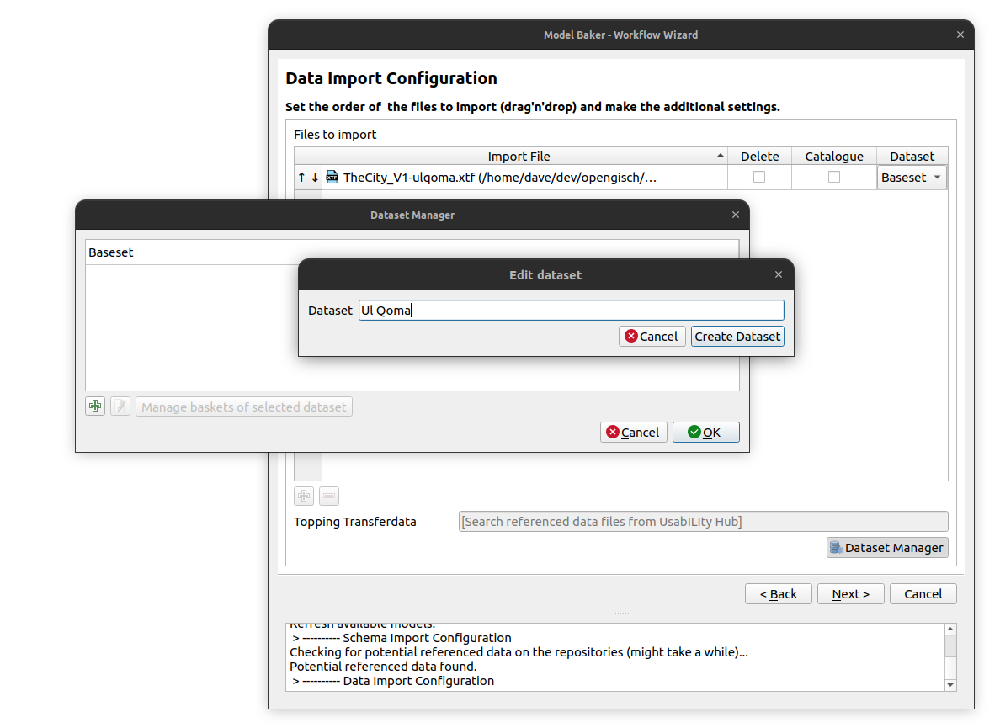
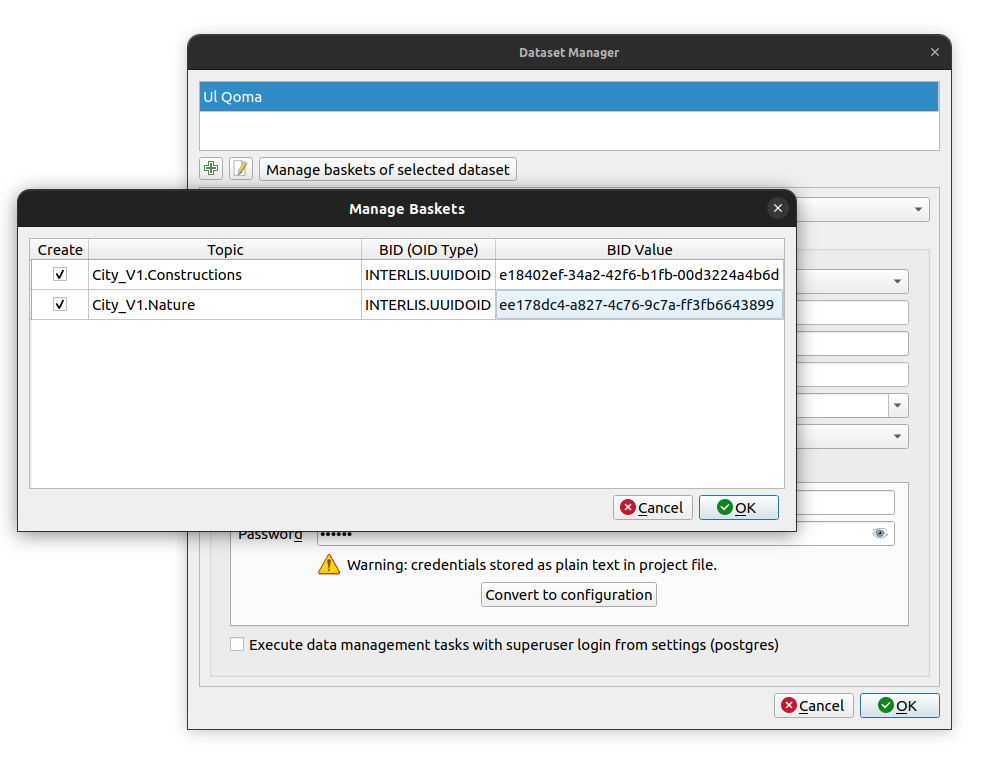
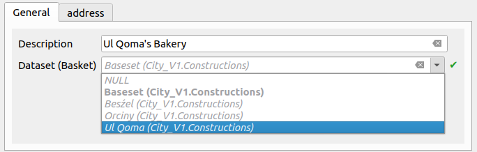
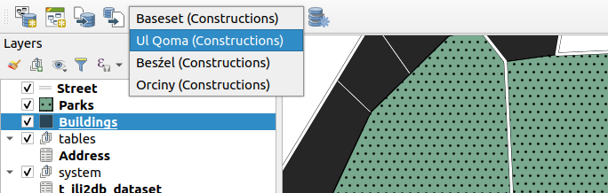
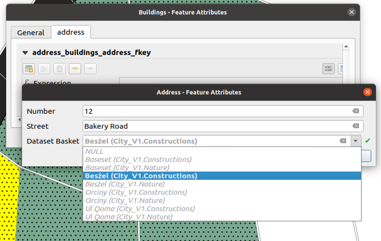

Dataset und Basket Handling
Was sind Datasets und Behälter (Baskets)
Ein Dataset enthält Daten eines bestimmten räumlichen oder thematischen Bereichs, die die Modellstruktur nicht beeinflussen. Die Daten eines Datasets können somit unabhängig von den anderen Daten verwaltet, validiert und exportiert werden. Behälter (Baskets) sind eine kleinere Variante. Während die Datasets in der Regel das gesamte Modell (oder sogar mehrere) umfassen, sind die Behälter normalerweise Teil eines Topics. Oft sind sie sogar die Schnittmenge von Topic und Dataset.
Datasets und Behälter ermöglichen dir, deine Daten thematisch zu trennen ohne das INTERLIS-Modell zu beeinflussen. Sie betreffen nur die Daten. Du kannst die Datasets separat importieren, exportieren und validieren, indem du die Filtermethoden von ili2db und Model Baker verwendest.
Importieren von Daten eines Datasets
Beispiel Use Case
Nehmen wir an, wir haben zwei verschmolzene Zwillingsstädte "Beźel" und "Ul Qoma". Wir wollen sie in dasselbe physische Datenmodell importieren, aber immer getrennt behandeln.
INTERLIS Modell
Hier haben wir ein einfaches Modell, das eine Stadt mit Bauwerken (Gebäuden und Strassen) und Naturflächen (Parks) darstellt.
INTERLIS 2.3;
MODEL City_V1 (en)
AT "https://modelbaker.ch"
VERSION "2020-06-22" =
IMPORTS GeometryCHLV95_V1;
DOMAIN
Line = POLYLINE WITH (STRAIGHTS) VERTEX GeometryCHLV95_V1.Coord2;
Surface = SURFACE WITH (STRAIGHTS) VERTEX GeometryCHLV95_V1.Coord2 WITHOUT OVERLAPS > 0.005;
STRUCTURE Address =
Street: TEXT;
Number: TEXT;
END Address;
TOPIC Constructions =
BASKET OID AS INTERLIS.UUIDOID;
OID AS INTERLIS.UUIDOID;
CLASS Buildings =
Address : Address;
Description : TEXT*99;
Geometry : Surface;
END Buildings;
CLASS Street =
Name : MANDATORY TEXT*99;
Geometry : Line;
END Street;
END Constructions;
TOPIC Nature =
BASKET OID AS INTERLIS.UUIDOID;
OID AS INTERLIS.UUIDOID;
CLASS Parks =
Name : MANDATORY TEXT*99;
Address : Address;
Geometry: Surface;
END Parks;
END Nature;
END City_V1.
Das Modell definiert BASKET OID, was bedeutet, dass es stabile Behälter-IDs benötigt und hier im Format einer UUID. Dasselbe gilt für die OID, für die es stabile UUIDs für jedes Objekt benötigt (t_ili_tid). Diese Spalte wird standardmässig in Model Baker erstellt, auch wenn das Modell sie nicht benötigt.
Note
Wir benötigen zum Erstellen des physischen Modells den ili2db-Parameter --createBasketCol. Diesen können wir durch die Einstellung mit Create Basket Column im [Model Baker Wizard] aktivieren(../../user_guide/import_workflow/#ili2db-settings). Ili2db erstellt eine neue Spalte t_basket in Klassentabellen, die auf Einträge in der zusätzlichen Tabelle t_ili2db_baskets verweist. Die Spalte t_basket muss mit dem Behälter gefüllt werden, zu dem ein Objekt gehört. Aber keine Sorge, das ist supereinfach mit dem Dataset Selektor.
Daten von Ul Qoma
Und hier sind die Daten der einen Stadt (Ul Qoma):
<?xml version="1.0" encoding="UTF-8"?><TRANSFER xmlns="http://www.interlis.ch/INTERLIS2.3">
<HEADERSECTION SENDER="ili2pg-4.6.1-63db90def1260a503f0f2d4cb846686cd4851184" VERSION="2.3"><MODELS><MODEL NAME="City_V1" VERSION="2020-06-22" URI="https://modelbaker.ch"></MODEL></MODELS></HEADERSECTION>
<DATASECTION>
<City_V1.Constructions BID="7dc3c035-b281-412f-9ba3-c69481054974">
<City_V1.Constructions.Buildings TID="c7c3e013-b5bb-474d-b7d8-1f8de718e160"><Address><City_V1.Address><Street>Rue des Fleures</Street><Number>1</Number></City_V1.Address></Address><Description>Maison Une</Description><Geometry><SURFACE><BOUNDARY><POLYLINE><COORD><C1>2698886.335</C1><C2>1262452.203</C2></COORD><COORD><C1>2698895.284</C1><C2>1262445.346</C2></COORD><COORD><C1>2698902.726</C1><C2>1262460.945</C2></COORD><COORD><C1>2698895.825</C1><C2>1262467.883</C2></COORD><COORD><C1>2698886.335</C1><C2>1262452.203</C2></COORD></POLYLINE></BOUNDARY></SURFACE></Geometry></City_V1.Constructions.Buildings>
<City_V1.Constructions.Buildings TID="3d6ceabe-7674-4436-8316-ef3b72ba1327"><Address><City_V1.Address><Street>Rue des Fleures</Street><Number>2</Number></City_V1.Address></Address><Description>Maison2</Description><Geometry><SURFACE><BOUNDARY><POLYLINE><COORD><C1>2698895.825</C1><C2>1262467.883</C2></COORD><COORD><C1>2698902.726</C1><C2>1262460.945</C2></COORD><COORD><C1>2698911.469</C1><C2>1262479.960</C2></COORD><COORD><C1>2698906.189</C1><C2>1262485.007</C2></COORD><COORD><C1>2698895.825</C1><C2>1262467.883</C2></COORD></POLYLINE></BOUNDARY></SURFACE></Geometry></City_V1.Constructions.Buildings>
<City_V1.Constructions.Buildings TID="d93069ea-ca81-4891-8055-e5791d1be167"><Description>Maison trois</Description><Geometry><SURFACE><BOUNDARY><POLYLINE><COORD><C1>2698916.495</C1><C2>1262502.034</C2></COORD><COORD><C1>2698923.489</C1><C2>1262491.762</C2></COORD><COORD><C1>2698928.297</C1><C2>1262492.854</C2></COORD><COORD><C1>2698926.858</C1><C2>1262505.315</C2></COORD><COORD><C1>2698916.495</C1><C2>1262502.034</C2></COORD></POLYLINE></BOUNDARY></SURFACE></Geometry></City_V1.Constructions.Buildings>
<City_V1.Constructions.Buildings TID="100415e2-db32-49aa-8d44-9eff1f38e372"><Address><City_V1.Address><Street>Parque de la Musique</Street><Number>1</Number></City_V1.Address></Address><Description>Maison Quatre</Description><Geometry><SURFACE><BOUNDARY><POLYLINE><COORD><C1>2698934.417</C1><C2>1262440.620</C2></COORD><COORD><C1>2698934.854</C1><C2>1262426.195</C2></COORD><COORD><C1>2698949.060</C1><C2>1262428.600</C2></COORD><COORD><C1>2698947.958</C1><C2>1262441.422</C2></COORD><COORD><C1>2698934.417</C1><C2>1262440.620</C2></COORD></POLYLINE></BOUNDARY></SURFACE></Geometry></City_V1.Constructions.Buildings>
<City_V1.Constructions.Street TID="451cfaee-299f-4b72-bcc2-6b6a097ee0d2"><Name>Rue des Fleures</Name><Geometry><POLYLINE><COORD><C1>2698866.447</C1><C2>1262410.241</C2></COORD><COORD><C1>2698886.335</C1><C2>1262452.203</C2></COORD><COORD><C1>2698916.495</C1><C2>1262502.034</C2></COORD><COORD><C1>2698929.609</C1><C2>1262506.186</C2></COORD></POLYLINE></Geometry></City_V1.Constructions.Street>
<City_V1.Constructions.Street TID="d6ed2502-7161-4e04-8589-3cd6c84a51e0"><Name>Rue de la Musique</Name><Geometry><POLYLINE><COORD><C1>2698929.609</C1><C2>1262506.186</C2></COORD><COORD><C1>2698943.596</C1><C2>1262509.027</C2></COORD><COORD><C1>2698940.099</C1><C2>1262488.920</C2></COORD><COORD><C1>2698959.332</C1><C2>1262489.795</C2></COORD><COORD><C1>2698980.969</C1><C2>1262480.834</C2></COORD><COORD><C1>2698993.863</C1><C2>1262415.486</C2></COORD></POLYLINE></Geometry></City_V1.Constructions.Street>
<City_V1.Constructions.Street TID="1f47c793-326a-47ba-b076-8ae9f25b2990"><Name>Rue de la Soleil</Name><Geometry><POLYLINE><COORD><C1>2698866.447</C1><C2>1262410.241</C2></COORD><COORD><C1>2698901.415</C1><C2>1262410.460</C2></COORD><COORD><C1>2698902.071</C1><C2>1262390.790</C2></COORD><COORD><C1>2698906.005</C1><C2>1262389.041</C2></COORD><COORD><C1>2698935.510</C1><C2>1262391.227</C2></COORD><COORD><C1>2698984.684</C1><C2>1262406.307</C2></COORD><COORD><C1>2698993.863</C1><C2>1262415.486</C2></COORD></POLYLINE></Geometry></City_V1.Constructions.Street>
</City_V1.Constructions>
<City_V1.Nature BID="6cc059e9-0182-4c9f-9208-28be3c172471">
<City_V1.Nature.Parks TID="3445b04b-a4ed-4a03-bb09-c9e52134cad6"><Name>Parque de la Musique</Name><Geometry><SURFACE><BOUNDARY><POLYLINE><COORD><C1>2698940.099</C1><C2>1262488.920</C2></COORD><COORD><C1>2698932.231</C1><C2>1262487.828</C2></COORD><COORD><C1>2698934.417</C1><C2>1262440.620</C2></COORD><COORD><C1>2698963.922</C1><C2>1262442.368</C2></COORD><COORD><C1>2698963.484</C1><C2>1262465.754</C2></COORD><COORD><C1>2698982.968</C1><C2>1262470.701</C2></COORD><COORD><C1>2698980.969</C1><C2>1262480.834</C2></COORD><COORD><C1>2698959.332</C1><C2>1262489.795</C2></COORD><COORD><C1>2698940.099</C1><C2>1262488.920</C2></COORD></POLYLINE></BOUNDARY></SURFACE></Geometry></City_V1.Nature.Parks>
<City_V1.Nature.Parks TID="d7e73464-f27e-4d2d-848c-66735f3fe5af"><Name>Parque des Fleures</Name><Geometry><SURFACE><BOUNDARY><POLYLINE><COORD><C1>2698866.447</C1><C2>1262410.241</C2></COORD><COORD><C1>2698901.415</C1><C2>1262410.460</C2></COORD><COORD><C1>2698903.164</C1><C2>1262439.309</C2></COORD><COORD><C1>2698886.335</C1><C2>1262452.203</C2></COORD><COORD><C1>2698866.447</C1><C2>1262410.241</C2></COORD></POLYLINE></BOUNDARY></SURFACE></Geometry></City_V1.Nature.Parks>
</City_V1.Nature>
</DATASECTION>
</TRANSFER>
Dies sind im Wesentlichen die Daten in einem Dataset. Du hast vielleicht schon die BID-Felder bemerkt. Diese kennzeichnen die Behälter für jedes Topic. Es wäre technisch möglich, mehrere Behälter pro Topic im selben Dataset zu haben, aber das wird normalerweise nicht so verwendet.
Daten Update anstelle eines Daten Imports
Wir müssen nun die Daten von Ul Qoma in unser physisches Modell mit dem ili2db-Parameter --dataset "Ul Qoma" importieren. Wenn der Dataset bereits in der physischen Datenbank existiert, machen wir keinen --import, sondern ein --update. Das bedeutet, dass alle Daten in diesem Dataset mit den Daten aus der xtf-Datei aktualisiert werden (und entfernt werden, wenn sie dort nicht vorhanden sind).
Mit Model Baker führen wir generell ein --update durch, da wir nur in bestehende Datasets importieren. Wenn du zuerst alle Daten aus diesem Dataset löschen möchtest (auch aus Behälter, die nicht in der Transferdatei enthalten sind), kannst du das entsprechende Kontrollkästchen aktivieren. In diesem Fall wird stattdessen ein --replace-Befehl ausgeführt.
Note
Der Unterschied zwischen einem --replace und einem --update besteht darin, dass einerseits bei einem --update die Behälter, die nicht in der Transferdatei enthalten sind, unangetastet bleiben und andererseits die technischen IDs in der physischen Datenbank erhalten bleiben (weil wir "aktualisieren"), während sie bei einem --replace neu erstellt werden (weil wir hier "löschen" und "einfügen"). Das bedeutet, dass diese beiden Befehle unterschiedliche Backend-Funktionen auslösen könnten (z. B. Trigger-Funktionen auf PostgreSQL).
Dataset Manager
Um ein Dataset mit dem Namen "Ul Qoma" auswählen zu können, müssen wir es im Dataset Manager erstellen.

Erstellen von Behältern
Mit dem --update der Daten in ein Dataset werden die benötigten Behälter von ili2db erstellt.
Falls du ein neues Dataset erstellst und frische Daten in QGIS erfassen möchtest (kein Import bestehender Daten), müssen die Behälter ebenfalls erstellt werden. Öffne dazu Verwalte Behälter des gewählten Datasets.

Es werden sinnvolle BIDs (der in der t_ili_tid gespeicherte Wert) generiert. In diesem Fall mit UUIDs geschieht das ziemlich automatisch. Aber falls du einen STANDARDOID oder benutzerdefinierten OID-Typ für deine BID verwendest, musst du sie möglicherweise bearbeiten. Weitere Informationen zu OIDs, BIDs usw. findest du im entsprechenden Kapitel.
Update Kommando
Danach kannst du auf das Datasetfeld doppelklicken und "Ul Qoma" wählen. Dieser Befehl wird im Hintergrund ausgeführt:
java -jar /home/freddy/ili2pg-4.6.1.jar --update --dbhost localhost --dbport 5432 --dbusr postgres --dbpwd ****** --dbdatabase freds_bakery --dbschema thecityandthecity --importTid --importBid --dataset "Ul Qoma" /home/freddy/referencedata/TheCity_V1-ulqoma.xtf
Wie du siehst, werden --importTid und --importBid automatisch zum Befehl hinzugefügt. Der Befehl --update erfordert stabile TIDs und BIDs. In unserem Anwendungsfall definiert das Modell stabile TIDs und BIDs, so dass sie nicht benötigt würden. Falls dein Modell diese aber nicht definiert hat, müssen wir ili2db mitteilen, dass es davon ausgehen soll, dass die von uns importierten IDs stabil sind. Denn andernfalls ist eine saubere Handhabung von Datasets / Behälter nicht möglich.
Struktur in der Datenbank
Endnutzer:innen müssen das nicht wissen. Aber es kann interessant sein zu wissen, wie es in der Datenbank aussieht.
Dataset und Daten von "Ul Qoma"
Nachdem du die Daten der Stadt "Ul Qoma" importiert hast, befinden sich nun diese beiden Tabellen in der Datenbank. Sie sehen wie folgt aus:
t_ili2db_dataset:
t_id | datasetname
------+-------------
4 | Ul Qoma
t_ili2db_basket:
t_id | dataset | topic | t_ili_tid | attachmentkey | domains
------+---------+-----------------------+--------------------------------------+-------------------------+---------
5 | 4 | City_V1.Constructions | d861b84f-7068-43d0-b8c1-f0d2f200b075 | TheCity_V1-ulqoma.xtf-5 |
23 | 4 | City_V1.Nature | 8d4b122c-3582-447c-b933-3175674151e0 | TheCity_V1-ulqoma.xtf-5 |
Wie du siehst, wurden die beiden Behälter erstellt und mit dem zuvor erstellten Dataset verbunden. In Wirklichkeit sehen sie auf Ihrem System nicht genau so aus. Es gibt dort den Standard-Dataset namens Baseset, der von Model Baker bei der Erstellung der physisch Datenbank erstellt wurde, und die entsprechenden Behälter pro Topic.
Wenn wir nun die Daten überprüfen, sehen wir, dass sie auf die Behälter verweisen (die wiederum auf das Dataset verweisen).
street:
t_id | t_basket | t_ili_tid | aname | ageometry
------+----------+--------------------------------------+-------------------+--------------------
19 | 5 | 7bcc0efd-1d81-400a-8dfb-1f17f4e72287 | Main Route | 01020000200808[...]
20 | 5 | 3eab5bd9-3dc8-4e73-81f1-b8d8cfaba748 | Tiny Route | 01020000200804[...]
21 | 5 | b5c3d22c-974f-49c9-b361-d85dbdc4000b | Park Way | 01020000200808[...]
22 | 5 | d954d3c4-ec24-44cd-af2d-d7f3af781a18 | Mullholland Drive | 01020000200808[...]
parks:
t_id | t_basket | t_ili_tid | aname | ageometry
------+----------+--------------------------------------+-------------+--------------------------
24 | 23 | dbe968d7-e41d-4c14-9560-c2161bea76db | UlQoma Park | 01030000200808000800[...]
25 | 23 | 574eed9f-4cef-4747-8cbb-5e8519898626 | Big Green | 01030000200808000000[...]
26 | 23 | d92d5cde-7ef3-48e8-b6cc-e370a5cba64d | Selmas Park | 01030000200080033330[...]
Dataset und Daten von "Ul Qoma" und "Besźel"
Interessanter sieht es aus wenn wir auch die Daten von "Besźel" importieren.
<?xml version="1.0" encoding="UTF-8"?><TRANSFER xmlns="http://www.interlis.ch/INTERLIS2.3">
<HEADERSECTION SENDER="ili2pg-4.6.1-63db90def1260a503f0f2d4cb846686cd4851184" VERSION="2.3"><MODELS><MODEL NAME="City_V1" VERSION="2020-06-22" URI="https://modelbaker.ch"></MODEL></MODELS></HEADERSECTION>
<DATASECTION>
<City_V1.Constructions BID="7dc3c035-b281-412f-9ba3-c69481054974">
<City_V1.Constructions.Buildings TID="c7c3e013-b5bb-474d-b7d8-1f8de718e160"><Address><City_V1.Address><Street>Rue des Fleurs</Street><Number>1</Number></City_V1.Address></Address><Description>Maison Une</Description><Geometry><SURFACE><BOUNDARY><POLYLINE><COORD><C1>2698886.335</C1><C2>1262452.203</C2></COORD><COORD><C1>2698895.284</C1><C2>1262445.346</C2></COORD><COORD><C1>2698902.726</C1><C2>1262460.945</C2></COORD><COORD><C1>2698895.825</C1><C2>1262467.883</C2></COORD><COORD><C1>2698886.335</C1><C2>1262452.203</C2></COORD></POLYLINE></BOUNDARY></SURFACE></Geometry></City_V1.Constructions.Buildings>
<City_V1.Constructions.Buildings TID="3d6ceabe-7674-4436-8316-ef3b72ba1327"><Address><City_V1.Address><Street>Rue des Fleurs</Street><Number>2</Number></City_V1.Address></Address><Description>Maison 2</Description><Geometry><SURFACE><BOUNDARY><POLYLINE><COORD><C1>2698895.825</C1><C2>1262467.883</C2></COORD><COORD><C1>2698902.726</C1><C2>1262460.945</C2></COORD><COORD><C1>2698911.469</C1><C2>1262479.960</C2></COORD><COORD><C1>2698906.189</C1><C2>1262485.007</C2></COORD><COORD><C1>2698895.825</C1><C2>1262467.883</C2></COORD></POLYLINE></BOUNDARY></SURFACE></Geometry></City_V1.Constructions.Buildings>
<City_V1.Constructions.Buildings TID="d93069ea-ca81-4891-8055-e5791d1be167"><Description>Maison trois</Description><Geometry><SURFACE><BOUNDARY><POLYLINE><COORD><C1>2698916.495</C1><C2>1262502.034</C2></COORD><COORD><C1>2698923.489</C1><C2>1262491.762</C2></COORD><COORD><C1>2698928.297</C1><C2>1262492.854</C2></COORD><COORD><C1>2698926.858</C1><C2>1262505.315</C2></COORD><COORD><C1>2698916.495</C1><C2>1262502.034</C2></COORD></POLYLINE></BOUNDARY></SURFACE></Geometry></City_V1.Constructions.Buildings>
<City_V1.Constructions.Buildings TID="100415e2-db32-49aa-8d44-9eff1f38e372"><Address><City_V1.Address><Street>Parque de la Musique</Street><Number>1</Number></City_V1.Address></Address><Description>Maison Quatre</Description><Geometry><SURFACE><BOUNDARY><POLYLINE><COORD><C1>2698934.417</C1><C2>1262440.620</C2></COORD><COORD><C1>2698934.854</C1><C2>1262426.195</C2></COORD><COORD><C1>2698949.060</C1><C2>1262428.600</C2></COORD><COORD><C1>2698947.958</C1><C2>1262441.422</C2></COORD><COORD><C1>2698934.417</C1><C2>1262440.620</C2></COORD></POLYLINE></BOUNDARY></SURFACE></Geometry></City_V1.Constructions.Buildings>
<City_V1.Constructions.Street TID="451cfaee-299f-4b72-bcc2-6b6a097ee0d2"><Name>Rue des Fleurs</Name><Geometry><POLYLINE><COORD><C1>2698866.447</C1><C2>1262410.241</C2></COORD><COORD><C1>2698886.335</C1><C2>1262452.203</C2></COORD><COORD><C1>2698916.495</C1><C2>1262502.034</C2></COORD><COORD><C1>2698929.609</C1><C2>1262506.186</C2></COORD></POLYLINE></Geometry></City_V1.Constructions.Street>
<City_V1.Constructions.Street TID="d6ed2502-7161-4e04-8589-3cd6c84a51e0"><Name>Rue de la Musique</Name><Geometry><POLYLINE><COORD><C1>2698929.609</C1><C2>1262506.186</C2></COORD><COORD><C1>2698943.596</C1><C2>1262509.027</C2></COORD><COORD><C1>2698940.099</C1><C2>1262488.920</C2></COORD><COORD><C1>2698959.332</C1><C2>1262489.795</C2></COORD><COORD><C1>2698980.969</C1><C2>1262480.834</C2></COORD><COORD><C1>2698993.863</C1><C2>1262415.486</C2></COORD></POLYLINE></Geometry></City_V1.Constructions.Street>
<City_V1.Constructions.Street TID="1f47c793-326a-47ba-b076-8ae9f25b2990"><Name>Rue de neuf Soleils</Name><Geometry><POLYLINE><COORD><C1>2698866.447</C1><C2>1262410.241</C2></COORD><COORD><C1>2698901.415</C1><C2>1262410.460</C2></COORD><COORD><C1>2698902.071</C1><C2>1262390.790</C2></COORD><COORD><C1>2698906.005</C1><C2>1262389.041</C2></COORD><COORD><C1>2698935.510</C1><C2>1262391.227</C2></COORD><COORD><C1>2698984.684</C1><C2>1262406.307</C2></COORD><COORD><C1>2698993.863</C1><C2>1262415.486</C2></COORD></POLYLINE></Geometry></City_V1.Constructions.Street>
</City_V1.Constructions>
<City_V1.Nature BID="6cc059e9-0182-4c9f-9208-28be3c172471">
<City_V1.Nature.Parks TID="3445b04b-a4ed-4a03-bb09-c9e52134cad6"><Name>Parque de la Musique</Name><Geometry><SURFACE><BOUNDARY><POLYLINE><COORD><C1>2698940.099</C1><C2>1262488.920</C2></COORD><COORD><C1>2698932.231</C1><C2>1262487.828</C2></COORD><COORD><C1>2698934.417</C1><C2>1262440.620</C2></COORD><COORD><C1>2698963.922</C1><C2>1262442.368</C2></COORD><COORD><C1>2698963.484</C1><C2>1262465.754</C2></COORD><COORD><C1>2698982.968</C1><C2>1262470.701</C2></COORD><COORD><C1>2698980.969</C1><C2>1262480.834</C2></COORD><COORD><C1>2698959.332</C1><C2>1262489.795</C2></COORD><COORD><C1>2698940.099</C1><C2>1262488.920</C2></COORD></POLYLINE></BOUNDARY></SURFACE></Geometry></City_V1.Nature.Parks>
<City_V1.Nature.Parks TID="d7e73464-f27e-4d2d-848c-66735f3fe5af"><Name>Parque des Fleurs</Name><Geometry><SURFACE><BOUNDARY><POLYLINE><COORD><C1>2698866.447</C1><C2>1262410.241</C2></COORD><COORD><C1>2698901.415</C1><C2>1262410.460</C2></COORD><COORD><C1>2698903.164</C1><C2>1262439.309</C2></COORD><COORD><C1>2698886.335</C1><C2>1262452.203</C2></COORD><COORD><C1>2698866.447</C1><C2>1262410.241</C2></COORD></POLYLINE></BOUNDARY></SURFACE></Geometry></City_V1.Nature.Parks>
</City_V1.Nature>
</DATASECTION>
</TRANSFER>
Wir erstellen das Dataset "Besźel" mit dem Dataset Manager und updaten die Daten mit dem folgenden Kommando:
java -jar /home/freddy/ili2pg-4.6.1.jar --update --dbhost localhost --dbport 5432 --dbusr postgres --dbpwd ****** --dbdatabase freds_bakery --dbschema thecityandthecity --importTid --importBid --dataset Besźel /home/dave/dev/gh_signedav/usabilitydave/referencedata/TheCity_V1-beszel.xtf
t_ili2db_dataset:
t_id | datasetname
------+-------------
4 | Ul Qoma
28 | Besźel
t_ili2db_basket:
t_id | dataset | topic | t_ili_tid | attachmentkey | domains
------+---------+-----------------------+--------------------------------------+--------------------------+---------
5 | 4 | City_V1.Constructions | d861b84f-7068-43d0-b8c1-f0d2f200b075 | TheCity_V1-ulqoma.xtf-5 |
23 | 4 | City_V1.Nature | 8d4b122c-3582-447c-b933-3175674151e0 | TheCity_V1-ulqoma.xtf-5 |
29 | 28 | City_V1.Constructions | 7dc3c035-b281-412f-9ba3-c69481054974 | TheCity_V1-beszel.xtf-29 |
40 | 28 | City_V1.Nature | 6cc059e9-0182-4c9f-9208-28be3c172471 | TheCity_V1-beszel.xtf-29 |
Wenn wir nun die Daten überprüfen, sehen wir, dass sie auf die Behälter verweisen (die wiederum auf das Dataset verweisen).
parks:
t_id | t_basket | t_ili_tid | aname | ageometry
------+----------+--------------------------------------+----------------------+--------------------
24 | 23 | dbe968d7-e41d-4c14-9560-c2161bea76db | UlQoma Park | 01030000200800[...]
25 | 23 | 574eed9f-4cef-4747-8cbb-5e8519898626 | Big Green | 01030000200000[...]
26 | 23 | d92d5cde-7ef3-48e8-b6cc-e370a5cba64d | Selmas Park | 01030000200800[...]
41 | 40 | 3445b04b-a4ed-4a03-bb09-c9e52134cad6 | Parque de la Musique | 01030000200800[...]
42 | 40 | d7e73464-f27e-4d2d-848c-66735f3fe5af | Parque des Fleurs | 01030000200000[...]
street:
t_id | t_basket | t_ili_tid | aname | ageometry
------+----------+--------------------------------------+---------------------+--------------------
20 | 5 | 3eab5bd9-3dc8-4e73-81f1-b8d8cfaba748 | Tiny Route | 01020000200800[...]
21 | 5 | b5c3d22c-974f-49c9-b361-d85dbdc4000b | Park Way | 01020000200800[...]
22 | 5 | d954d3c4-ec24-44cd-af2d-d7f3af781a18 | Mullholland Drive | 01020000200000[...]
37 | 29 | 451cfaee-299f-4b72-bcc2-6b6a097ee0d2 | Rue des Fleurs | 01020000200800[...]
38 | 29 | d6ed2502-7161-4e04-8589-3cd6c84a51e0 | Rue de la Musique | 01020000200800[...]
39 | 29 | 1f47c793-326a-47ba-b076-8ae9f25b2990 | Rue de neuf Soleils | 01020000200800[...]
Arbeiten mit Datasets
Jeder Layer hat nun ein Feld t_basket das ausgefüllt werden muss, denn jedes Feature muss in einem Behälter liegen.
Da Behälter in der Regel eine Schnittmenge aus Topic und Datset sind und das Topic durch das Model gegeben ist (jede Tabelle befindet sich normalerweise in einem Topic), sind es meistens Datasets und das Topic, die den Behälter im GUI beschreiben.
Auswählen des Datasets
Model Baker erstellt eine Relation Reference Widget mit den für den Layer relevanten Behälter (beschrieben durch den Datasetnamen und den Topicnamen). Dies führt zu einer Liste mit allen verfügbaren Datasets.
Beim Hinzufügen eines building Features sind die Datensätze "Baseset", "Besźel", "Orciny" and "Ul Qoma" und das Topic ist "Constructions".

Dataset Selektor
Da es immer ein zusätzlicher Schritt ist, den richtigen Behälter auszuwählen, und da du meistens nur mit einem Dataset arbeitest, kannst du im Dataset Selektor in der Model Baker Toolbar auswählen, welcher Behälter als Standardwert im Relation Reference Widget verwendet werden soll.

Die verfügbaren Behälter im Dataset Selektor hängen von der Datenquelle und dem Topic der Ebene ab. Sie ändern sich, wenn ein anderer Layer ausgewählt wird. Der angewählte Behälter wird in den Projektvariabeln gespeichert (<host>_<db>_<schema>_<topic> or <filepath>_<topic>).
Spezialfall mit Domain Tabellen
Wie bereits erwähnt, befindet sich eine Tabelle normalerweise in einem einzigen Topic. Dies gilt nicht für die Domänentabellen, die von mehreren Topics verwendet werden. Wenn du beispielsweise ein "Building" hinzufügst und dafür eine "Address", musst du den korrekten Behälter für das "Address" Feature auswählen. In diesem Fall sind im Relation Reference Widget alle verfügbaren Behälter enthalten.

BASKET OID oder nicht
Es ist dem:der Modellierer:in überlassen, ob die BASKET OID definiert werden soll oder nicht. Hier wird beschrieben, wie es im Kontext des Model Baker gehandhabt wird.
BASKET OID nutzen
Du kannst auch eine BASKET OID im Modell definiert haben.
INTERLIS 2.3;
MODEL Maps_V1 (en)
AT "https://modelbaker.ch"
VERSION "2021-12-15" =
TOPIC Maps =
BASKET OID AS INTERLIS.UUIDOID;
OID AS INTERLIS.UUIDOID;
CLASS Map =
Map_Name : TEXT;
END Map;
END Maps;
END Maps_V1.
Dies stellt sicher, dass die Daten auf das richtige Format der BID validiert werden können und ili2db berücksichtigt Behälter beim import/update/export. Wenn dies im Modell definiert ist, ist es erforderlich, die Handhabung der Behälter in QGIS zu verwenden (wir müssen das physische Modell mit dem ili2db-Parameter --createBasketCol erstellen). Dies wird derzeit nicht automatisch vom Model Baker erkannt und muss von den Usern sichergestellt werden.
Wenn man die Behälter behandelt, wird die BID validiert und exportiert:
<?xml version="1.0" encoding="UTF-8"?><TRANSFER xmlns="http://www.interlis.ch/INTERLIS2.3">
<HEADERSECTION SENDER="ili2gpkg-4.6.1-63db90def1260a503f0f2d4cb846686cd4851184" VERSION="2.3"><MODELS><MODEL NAME="Maps_V1" VERSION="2021-12-15" URI="mailto:U80863546@localhost"></MODEL></MODELS></HEADERSECTION>
<DATASECTION>
<Maps_V1.Maps BID="074eab94-8c7a-452f-b686-1c5ba250e705">
<Maps_V1.Maps.Map TID="b5ca7dbc-8fde-4d06-a830-538d8069a3cf"><Map_Name>test</Map_Name></Maps_V1.Maps.Map>
</Maps_V1.Maps>
</DATASECTION>
</TRANSFER>
Wenn man entscheidet, keine Behälter zu nutzen, würden die erfassten Daten nicht von ili2db behandelt (weil sie in keinem Behälter liegen) und das Resultat eines Exports würde leer sein:
<?xml version="1.0" encoding="UTF-8"?><TRANSFER xmlns="http://www.interlis.ch/INTERLIS2.3">
<HEADERSECTION SENDER="ili2gpkg-4.6.1-63db90def1260a503f0f2d4cb846686cd4851184" VERSION="2.3"><MODELS><MODEL NAME="Maps_V1" VERSION="2021-12-15" URI="mailto:U80863546@localhost"></MODEL></MODELS></HEADERSECTION>
<DATASECTION>
</DATASECTION>
</TRANSFER>
BASKET OID nicht nutzen
Du kannst auch Behälter nutzen ohne dass BASKET OID im Modell definiert ist. Wie erwähnt wird --importBid automatisch zum Kommando hinzugefügt, wenn die Nutzung von Behälter aktiviert ist. ili2db geht also davon aus, dass die BIDs, die wir importieren, stabil sind. Dies wird nicht durch die Modelldefinition gewährleistet, sondern muss durch die Person sichergestellt werden, welche die Daten bereitstellt.
INTERLIS 2.3;
MODEL Maps_V1 (en)
AT "https://modelbaker.ch"
VERSION "2021-12-15" =
TOPIC Maps =
OID AS INTERLIS.UUIDOID;
CLASS Map =
Map_Name : TEXT;
END Map;
END Maps;
END Maps_V1.
Beim Export werden die BIDs berücksichtigt.
<?xml version="1.0" encoding="UTF-8"?><TRANSFER xmlns="http://www.interlis.ch/INTERLIS2.3">
<HEADERSECTION SENDER="ili2gpkg-4.6.1-63db90def1260a503f0f2d4cb846686cd4851184" VERSION="2.3"><MODELS><MODEL NAME="Maps_V1" VERSION="2021-12-15" URI="mailto:U80863546@localhost"></MODEL></MODELS></HEADERSECTION>
<DATASECTION>
<Maps_V1.Maps BID="072988b6-cc0a-422f-984a-574d5458b840">
<Maps_V1.Maps.Map TID="2ae2bcad-d011-4880-8ff9-23dde282911b"><Map_Name>test with baskets</Map_Name></Maps_V1.Maps.Map>
</Maps_V1.Maps>
</DATASECTION>
</TRANSFER>
Wenn keine BASKET OID definiert ist, ist es dennoch möglich Behälter zu nutzen. Ein Export der Daten wird dann erfolgreich sein.
Vorsicht: Die BID ist nicht stabil.
<?xml version="1.0" encoding="UTF-8"?><TRANSFER xmlns="http://www.interlis.ch/INTERLIS2.3">
<HEADERSECTION SENDER="ili2gpkg-4.6.1-63db90def1260a503f0f2d4cb846686cd4851184" VERSION="2.3"><MODELS><MODEL NAME="Maps_V1" VERSION="2021-12-15" URI="mailto:U80863546@localhost"></MODEL></MODELS></HEADERSECTION>
<DATASECTION>
<Maps_V1.Maps BID="Maps_V1.Maps">
<Maps_V1.Maps.Map TID="3779cdf4-e075-4471-aa51-f44d0af1e2b0"><Map_Name>daves no bask test</Map_Name></Maps_V1.Maps.Map>
</Maps_V1.Maps>
</DATASECTION>
</TRANSFER>
Behälterdaten in erweiterten Topics
Manchmal entsteht Verwirrung, wenn in der Datendatei der XML-Elementname von Objekten vom XML-Elementnamen des Baskets abweicht. Dies kommt von Vererbungen von Topics.
Beispiel
Angenommen, wir haben Folgendes:
MODEL Maps_V1 (en) AT "https://modelbaker.ch" VERSION "2021-12-15" =
TOPIC Maps =
OID AS INTERLIS.UUIDOID;
CLASS Map =
Map_Name : TEXT;
END Map;
END Maps;
END Maps_V1.
und erweitern das Topic und fügen eine neue Klasse hinzu:
MODEL CityMaps_V1 (en) AT "https://modelbaker.ch" VERSION "2021-12-15" =
IMPORTS Maps_V1;
TOPIC CityMaps EXTENDS Maps_V1.Maps =
OID AS INTERLIS.UUIDOID;
CLASS City =
City_Name : TEXT;
END City;
END CityMaps;
END CityMaps_V1.
Du fügst nun Objekte hinzu, ein Map-Objekt und ein City-Objekt. Du arbeitest – natürlich – im Behälter des erweiterten Topics (bereitgestellt vom Dataset Selektor des optimierten Projekts). Und du exportierst die Daten:
<CityMaps_V1.CityMaps BID="405b6f5c-6cb5-4c0e-b1ab-a4bd30ffe7fe">
<CityMaps_V1.CityMaps.City TID="1"><City_Name>Ul Qoma</City_Name></CityMaps_V1.CityMaps.City>
<Maps_V1.Maps.Map TID="2"><Map_Name>Street Map XY</Map_Name></Maps_V1.Maps.Map>
</CityMaps_V1.CityMaps>
Warum weichen die XML-Elementnamen nun ab?
Grund
Ein Behälter ist eine Instanz eines Topics. Das heisst, ein Behälter kann Objekte (Instanzen von Klassen) enthalten, die gemäss dem Topic erlaubt sind. Diese Klassen können in diesem Topic (des Behälters) definiert sein oder ebenso – wenn das Topic des Behälters eine Erweiterung eines Basis-Topics ist – im Basis-Topic. Deshalb können diese Klassen in der Transferdatei unterschiedliche XML-Elementnamen haben, selbst wenn sie im selben Behälter sind.